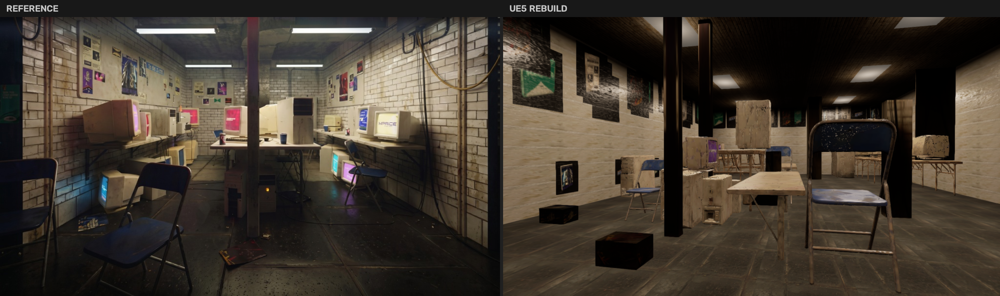
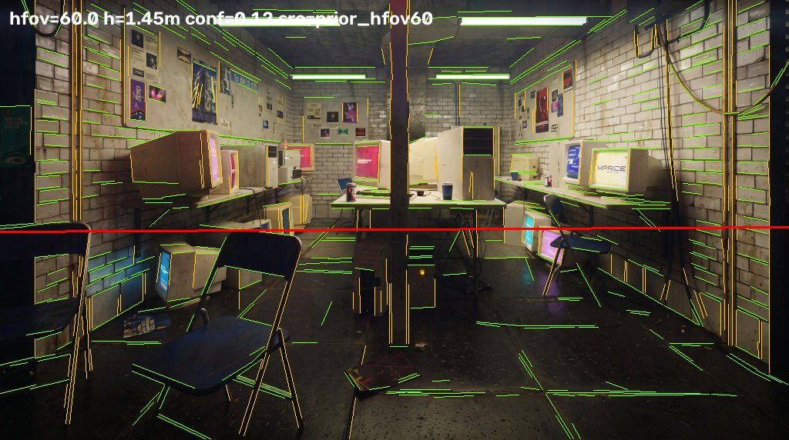

单图重建：资产库匹配与度量闭环
同一张参考图，两条架构，两个终点。

路一（UE5 资产库管线）单向前馈跑到底，判据是能不能交付。 路三（Blender 度量闭环）允许「渲染 → 度量 → 定位病因 → 改」无限循环，判据是还原度上限在哪。 两条线读同一张室内机房参考图、用同一份 39 模块资产库、共享同一组内参 hfov 95° / f 469.16 px。
两个终点

差别不在分数上，在性质上。路一做到结构对应，款式退化成代理盒，产物是一个能打开、能改、能继续装配的关卡； 路三被度量追到逐像素，但它只活在 Blender 里，没有引擎交付形态。
同一张输入，两个输出。拖动、点击或按 ← → 方向键。

同一张图，两次相机标定
两条线唯一严格同题的对照，也是后面所有差距的源头。参数都烧在画面里。

hfov=60.0 h=1.45m conf=0.12 ——
那是退回先验后的值，不是解出来的值。
calib.json 自己记了三条 ——
「vp2_plus_zenith 解出 hfov=15°，越界弃用」「无可信消失点对，退回 hfov=60.0° 先验」
「相机高度估计离散（MAD/median=0.35）」，置信度 0.12。最终由 calib_manual.json
人工覆盖为 hfov 95° / 相机高 0.78 m / 置信度 0.9，派生量重算。
这次运行的机位是人标的，不是解出来的。差别不在运气，在有没有把标定当成可验证的求解：路三把解出的地平线画回参考图逐点核对， 路一没有这一步 —— 后面每一级都在一个没人验算过的位姿上继续算。
上限也要承认：参考图是 AI 生成图，自身透视不自洽约 ±15 px （同一面墙不同砖缝外推的消失点能差 30 px）。追求亚分米级解算没有意义，早点转入闭环才对。
五阶段前馈
整条管线只有一条规矩：AI 只出提案，裁决全部交给确定性规则 —— 每一步的「裁决」就是它的落点。秒数与计数都来自那次运行当场写下的留档。
指标格里的「AI 调用」是整个调试期的累计，不是单次冷跑的调用数， 口径说明在文末复现一节。
一像素的代价
布局阶段不用 AI，只做一件事：把检测框的底边当成物体与地面的接触点，从相机高度和焦距反解深度。
depth_cm = cam_height_cm × fy / margin_px margin_px = 接触点到地平线的像素距离这条式子是双曲线，所以误差不是均匀噪声，是远端的悬崖。 拖动滑块给底边加 ±N 像素，看深度带怎么张开。
横轴是 28 个 ground_ray 对象各自的 margin_px，纵轴是按上式算出的深度。
曲线是式子本身，点是真实对象。
装配结果与自检回执
不是截图，是 scene_manifest.json 里 127 个 actor 的
loc_cm 直接画出来的。点类别筛选，移到点上读坐标与朝向。
房间盒来自 scene_layout.json，相机与视锥来自 cameras.json。
横轴 +X 进深、纵轴 +Y 横向，单位厘米。
为什么与原图仍有差距
把鼠标移到框或标签上，读那个对象的实测解算值。归因表按层拆，成串的细节收在表下的展开区里。
框来自 scene_layout.json → objects[].bbox_2d，归一化坐标直接乘图宽高，未做任何位置调整。
| 层 | 根因与实测证据 | 画面表现 | 改进方向 |
|---|---|---|---|
| 感知 | VLM 整排并框（CRT 召回 13/16）；贴墙桌带被框成内部框，「沿墙长桌」结构零证据，只能规则反推 | 密度不足；桌带位置是推断值 | 开放词汇检测器 + 实例分割 |
| 深度/标定 | 单目绝对深度误差 ±30–50%；自动标定置信不足退化为手标（fov_source=manual） |
尺度漂移、前后间距不符 | 度量深度模型逐像素摆放；灭点标定常态化 |
| 布局 | 规则补全（镜像带 / 等距上桌）是「合理化」而非「复原」，整齐排布抹掉原图的有机杂乱 | 过于整齐、局部空旷 | 闭环：截图 ↔ 参考图比对后增量修正 |
| 匹配 | 21 件库命中全部只到类别级，0 件款式级；17/30 带质量 flag；注册表 bbox 虚大 1.56×（UE 实测发现） | 款式错位、个别比例失真 | 预览图 embedding 检索；实测 bbox 回写注册表 |
| 材质/光照 | VLM 估白平衡 4000K（直用整场发蓝，被钳到 6500）；墙材单点取样重铺，釉面/污渍空间变化全丢 | 墙面平板感、氛围偏暖偏平 | PBR 库检索；曝光 / 白平衡闭环自校 |
匹配层 · 30 个对象逐条（移到某一行，它的框在上图亮起来）
| 对象 | 类别 | 模块 | 缩放 | 请求 cm | 装配后 cm | 最大轴偏差 | 标记 |
|---|
材质层 · 三张无缝材质的接缝分数
| 材质 | 类别 | 接缝分数 | 质检轮数 | 结果 |
|---|
终局规则（AABB 去穿插、真实包围盒重力吸附与微推挤）实现了 0 穿模 / 0 悬空 / 0 椅背穿桌面， 但每次移动都以「物理合法」为目标而非「贴近原图」，进一步消耗逐件对应度 —— 在没有闭环比对时这是正确取舍（穿模比错位更刺眼）。
九步迭代

九步里只有两条判断可以搬走。一、先把「像不像」变成可测量的量：容差边缘 F 管结构、 16 分区曝光色相表管「哪里错」、直方图交集管影调、逐物体互相关管「哪个物体错」。 第一版渲染很难看，但闭环通了，此后每个改动都能被量化。
二、布局写在图像空间，不写坐标：每个物体记的是它与支撑面接触的那个像素加支撑面名字， 由反投影解算成米。移动一个物体 = 改一个像素值。
{"id":"crt_L2","asset":"M02","support":"shelf_L","anchor_px":[300,250],"yaw":88}代价：掠射墙上这个办法是病态的（读数差几像素、纵深差几米）， 墙架必须改成同时约束投影宽度、中心、顶行、底行的联合拟合 —— 只用宽度一项是退化的，侧视的深物体和正视的浅物体投出同样宽度。
并发怎么拆：所有权按文件切；有先后依赖的不并发 —— 系统性分量必须先定， 否则四个区域 owner 会把系统误差各自吸收进坐标里，事后无法拆分。 真实成本：三轮并发共 13 个 agent、约 155 万 token；第一轮 16 个 agent 因 API 529 全部失败、零产出。
SSIM 是错的目标函数
点图例开关曲线，点某一步跳回上面的步进器。这张图的全部意义就是证明一件事： 边缘 F 从 0.260 翻到 0.650，SSIM 几乎不动。
它被高频纹理一致性主导（污渍、单块砖的色差、地上的碎屑），而这些没有任何重建能逐像素复现。 结果是它奖励一面空白墙胜过一面正确的墙。
砖缝暗度实验：拖动滑块，SSIM 一路上升，而渲染出的砖缝振幅早已跌到参考图（虚线）之下。 砖缝最终按振幅定，不按 SSIM 定。
度量工具自己也会骗人

整图指标说不清「哪里」不对。切换两组：16 分区标在渲染图上，给「哪里不对」； 逐物体标在参考图上，给「哪个物体不对」。
逐物体配准 · 32 行（点筛选换判定，点某一行在图上高亮）
| 物体 | 资产 | dx | dy | 位移 | 相关峰 | 判定 |
|---|
dy 只可能取到一侧；
处在一排几乎相同的米色 CRT 里的物体，相关器会锁到邻居身上。实测噪声地板：12 个接触像素可证明没有移动的物体，
报出的 dy 平均变化了 10.2 px。所以它指的是「去哪里看」，不是「移动多少」。被推翻的三个「我自己的结论」

都曾被当成缺陷记录，后来被测量推翻。保留而不删，因为推翻的过程比结论更有用。
①「前景那把椅子太小、太远」—— 撤回
判断来自缩略图而不是测量。实际它靠背顶点与参考图相差 3 px、后腿脚 5 px、 靠背轮廓宽 117 px 对 117 px。
②「左前那台 CRT 纵深错了 0.93 m」—— 错的是公式
那个数字来自我自己推的一个「视宽 → 纵深」闭式近似。改用直接投影网格重解之后， 原摆放误差只有 6 px —— 错的是近似式，不是摆放。
③「存在 −6.3 px 的系统性竖直偏移」—— 前提本身是错的
这条是我作为前提交给 agent 去诊断的，结果它把前提推翻了：
- 趋势由单个物体造成。
chair_edge占 57% 面积权重， 而它的搜索窗被画面下缘和左缘裁切，dy只可能落在 [−40,0]。 剔掉这一行，加权均值从 −6.3 翻成 +2.6。 - 相机俯仰：需要的 −0.754° 会把地平线推离实测消失点 6.3 px，A/B 渲染后每项指标都变差。
- 相机高度：高度误差有 1/纵深 的特征，而实测 dy 与纵深零相关 （Pearson r = −0.09, t = −0.37, n = 19）。
- 共享支撑高度：同一支撑面上 CRT 平均 dy +18.6 而托架 −5.3，同一面里 24 px 的分裂。
它还指出一个我自己架构上的性质我没想到：相机改动在原理上就修不了这些数 —— 布局写在图像空间并通过同一台相机重新解算，所以任何俯仰 / 高度改动下， 锚定物体的接触像素移动量 ≤ 0.011 px。我却让它去考虑改相机。
后续闭合得很干净：区域 owner 实际去修 chair_edge（它确实近了 0.26 m、偏航错了 108°），
修完那个「系统性趋势」自己消失了 —— 加权均值 dy 从 −6.3 变成 +2.4。
两条路合起来说明什么
路一给出的是可交付与工程可复现：人工在环成本低 —— 「存在即覆盖」的文件钩子， 本次的机位就是这么救回来的；单件失败不断链 —— 9 个对象没匹配上库，走代理盒继续装配，零静默丢弃。
路三给出的是还原度上限与病因定位能力：同一张图能被追到逐像素，代价是没有引擎交付形态， 成本也诚实写在上面（13 个 agent、155 万 token，一轮全灭）。
桥在中间：把前馈改成闭环 —— 装配 → 截图 → 与参考图比对 → 增量修正。 本版的装配回执与对象寻址（每个 actor 有稳定 id）正是为此预留的接口。
复现与引用
展开：两条线各自怎么跑起来、以及数字口径
路一 · 评审快速上手（约 5 分钟）
UE 5.5.4 打开 AISceneBuilderDemo.uproject（首开等 shader 编译 5–15 分钟）→
Plugins 面板勾选「离线回放」（无网无 Key 必开）→ Tools 面板选参考图跑五步 →
产物 /Game/Maps/GenScene，回执与留痕在 .../Python/output/run_*/。
38 秒实跑录像（联网），与离线回放构成两个口径。片尾卡的读数来自交付工程包的另一次运行，
与本文这次 run_fd6e434f 不是同一批数字。
路三 · 复现命令
python tools/bake_wall_layer.py
python tools/merge_parts.py --resolve
blender -b --python build.py -- --engine CYCLES --samples 480 \
--out out/render_final.png --save-blend
python tools/compare.py --render out/render_final.png --tag final
python tools/align_check.py --render out/render_final.png --visBlender 4.2.3 LTS · Cycles / OptiX · RTX 3080 · 参考图 1024×572 · 39 模块贴图资产库 · 全程无云端调用、无 API Key。
留痕口径说明
引用
云端图像拆分 / 图生 3D 服务、云端 VLM 网关；NumPy · OpenCV · PyYAML · PyMeshLab（GPL-3，仅作者侧，不随工程分发）· UE5 PythonScriptPlugin。 未使用 ComfyUI；未引入第三方美术资产 —— 网格与贴图全部由上述服务从参考图生成或程序化创建。
process/run_fd6e434f/（run_summary.json · scene_manifest.json ·
match_report.json · calib.json 等）与 process/recon/data.json。所有数字均为实测，可用上面的命令复现；被推翻的结论按原样保留。
另外两份：方法论 · 单图到三维美术场景 · 对照实验 · 程序化场景重建 ← 返回三条路总览